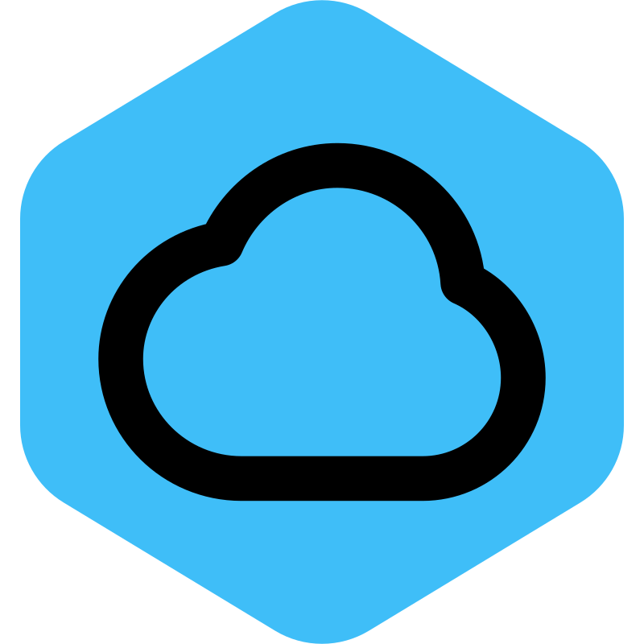

Más información
Más información
Volver
@if(usuario_wc()){

Nombre completo:
{{ usuario_wc()?.nombre_completo | titlecase }}
Contacto: {{ usuario_wc()?.contacto }}
Correo: {{ usuario_wc()?.correo | lowercase
}}
Documento:
{{ usuario_wc()?.abreviatura }} {{ usuario_wc()?.documento }}
Usuario: {{ usuario_wc()?.nombre_usuario }}
Permisos
}